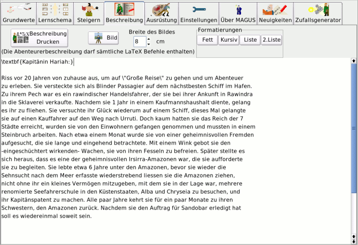

Bedienung - Beschreibung
|
Beschreibung
Die Notebookseite Beschreibung ermöglicht es, eine mehr oder weniger ausführliche (Hintergrund-)Beschreibung eines
Abenteurers zu erstellen.
Um den Text zu formatiern und zu layouten, stehen LaTeX-Kommandos zur Verfügung.
Eine kleine Auswahl der wichtigsten(?) Kommandos sowie eine kurze Anleitung, wie diese Kommandos genutzt werden können,
findet sich auf der Seite Beschreibung
|
| Zum Seitenanfang |
Notebookseite Beschreibung

|
| Zum Seitenanfang |
|
Diese Seite besteht in erster Linie aus einem Texteingabefeld. Oberhalb des Eingabefeldes existieren einige Buttons,
um ein Bild einzubinden und einige Textformatierungen einzufügen. Diese werden innerhalb des Eingabefelds in
der LaTeX-Syntax angezeigt, jedoch nicht in der Ansicht, wie sie aus gedruckt werden (WYSIWYG). Weitere Details zur
Formatierung finden sich auf der Seite Beschreibung.
|
| Zum Seitenanfang |
|